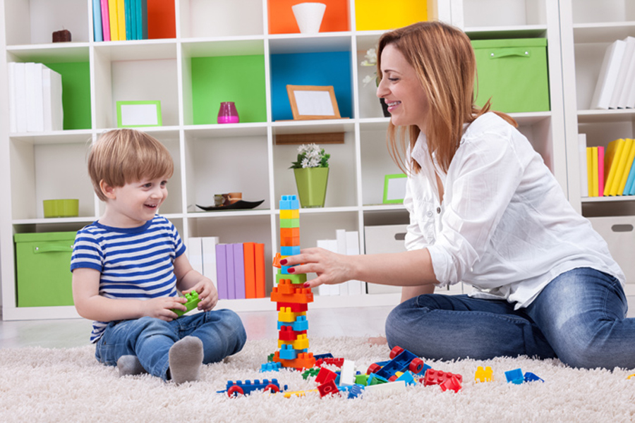
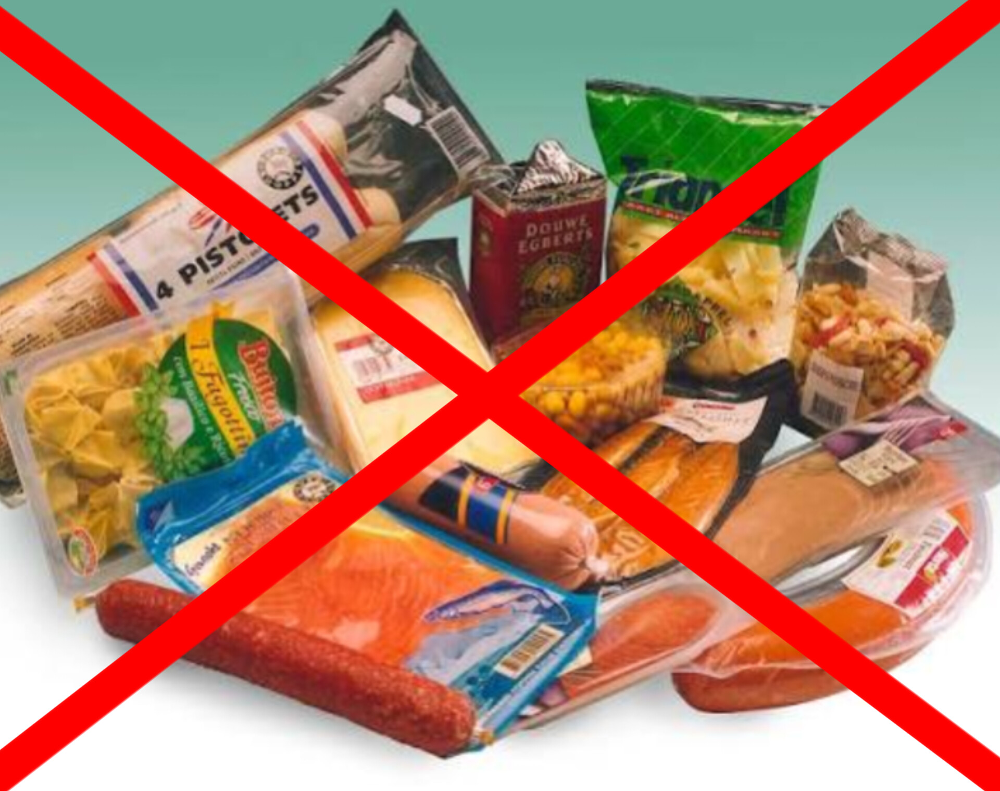

Taryel Hüseynzadə vebsaytına xoş gəlmisiniz!
Uşaqların fiziki və zehni inkişafı üçün yuxunun əhəmiyyəti və düzgün rejim qurma yolları.
Ardını oxuErkən yaşda beyin inkişafını dəstəkləyən ən effektiv üsullar və tövsiyələr.
Ardını oxu
Uşaqların nitq inkişafı və valideynlərin bu prosesdəki rolu haqqında ətraflı məqalə.
Ardını oxu
Müasir dövrün ən böyük problemlərindən biri olan emal olunmuş qidaların sağlamlığımıza təsiri haqqında.
Ardını oxu